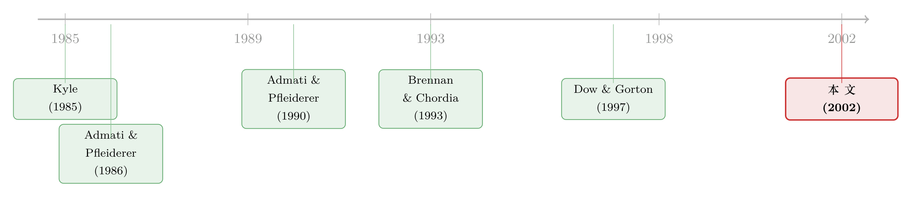

把信息卖给你的客户，竟是为了管住你自己的手
本文读的是 Biais & Germain (2002, Review of Financial Studies)：一家既能拿私有信息自营、又能把信息打包成基金卖给客户的金融机构，最优合约会让经理的报酬随基金利润递增——但更深一层的用意，是借这份合约限制自己自营加基金的总下单量，从而少泄露信息、把"知情交易"这块蛋糕做得更大。卖信息表面是多赚一笔管理费，骨子里却是一种自我捆绑。
1 一桩"既当裁判又当运动员"的生意
设想一家投资银行。它对某只股票的真实价值有独到的私有信息——可能是一笔尚未公开的并购，也可能是一项风险项目的成败。摆在它面前的有两条路。
第一条路很直接：自己闷声下单，闷声赚钱。这就是所谓的自营交易 (proprietary trading)。
第二条路要绕一点：把信息"卖"出去。可以像投资顾问、研报、买入卖出评级那样直接出售 (direct sale)；也可以更隐蔽——设立一只基金，把份额卖给客户，再用自己的私有信息替客户操盘。这就是间接出售 (indirect sale of information)。
问题在于，这两条路并不互斥。一家机构完全可以一边替客户管基金，一边为自己的账户下单。于是一个让人不安的念头浮上来：既然我自己也在场内交易，那我为什么要老老实实地把信息告诉客户？Admati 和 Pfleiderer (1986) 早就把这层顾虑挑明了——"如果卖信息的人自己也交易，他如实披露所承诺信息的动机会被严重扭曲。"道理很朴素：我若给客户灌点假消息，让总的订单流变得更"乱"，市场就更难从下单里读出我的真实意图，我自营那一腿的价格冲击 (price impact) 就更小，自己反而赚得更多。
这正是 Michaely 和 Womack (1999) 在承销商分析师身上记录到的那种利益冲突 (conflict of interest)：一边是声誉，逼着你说真话；一边是自家的算盘，引诱你说假话。
那么，有没有一份合约，能让这家机构既不必靠声誉约束、又心甘情愿地把真信息用到客户的基金里去？ 这就是 Biais 和 Germain 这篇论文要回答的问题。它的答案，比"对齐利益"这四个字要精巧得多。
2 先搭舞台：一个还没有客户的世界
要讲清楚卖信息的妙处，得先看清楚不卖信息时世界长什么样。
资产的最终价值 \(v\) 有三种可能：\(u=m+\varepsilon\)（高）、\(m\)（中）、\(d=m-\varepsilon\)（低），分布关于中间状态 \(m\) 对称。场内有三类人：
- 流动性交易者 (liquidity traders) 等概率地提交 \(L\)、\(0\) 或 \(-L\) 的市价单，与 \(v\) 无关；
- 一位知情交易者 (informed trader)，完美观测到 \(v\)，提交订单 \(X(v)\)；
- 风险中性、竞争性的做市商 (market makers)。
这里有个关键的设定：做市商同时看到知情者和流动性交易者两张单子，却分不清哪张是谁的——交易是匿名的。看到一对订单 \((a,b)\)，做市商无法判断到底是 \(X(v)=a,\ \ell=b\) 还是反过来。这一点和 Kyle (1985) 让做市商只看到两单之和略有不同，更接近 Dow 和 Gorton (1997) 的设定。做市商把价格定在订单流条件下的期望价值：\(P=E(v\mid \text{order flow})\)。
为简化，论文后面集中在两点分布：只有 \(u\) 和 \(d\)，等概率发生。此时若知情者不能承诺交易策略（即看到 \(v\) 之后才相机决定），均衡价格为
$$P(L,L)=P(L,0)=m+\varepsilon,\qquad P(L,-L)=m,$$ $$P(-L,0)=P(-L,-L)=m-\varepsilon.$$
知情者在 \(u\) 态买 \(L\)、在 \(d\) 态卖 \(L\)。算一下她的期望利润：只有当流动性单恰好是 \(-L\)（把她的买单"伪装"掉）时她才赚到 \(\varepsilon\)，三种流动性单等概率，于是
$$G=\frac{L\varepsilon}{3}.$$
记住这个 \(G\)——它是"单打独斗"的基准线。
3 一个反直觉的念头：主动往自己的单子里掺噪声
接着，一个自然的问题是：如果知情者能在看到信号之前就承诺一套策略，她会怎么做？
直觉上你会说"当然是看准了就重仓"。但论文的命题 1 给出了一个反直觉的结论：在某些情形下，最优策略是故意随机化——在 \(u\) 态以一定概率买 \(L\)、以互补概率干脆不动（\(0\)）。
为什么自废武功反而更好？因为价格冲击取决于做市商对你策略的信念。如果你承诺"在 \(d\) 态有时也下 \(0\)"，那么 \((L,0)\) 这对订单就未必来自 \(u\) 态——它也可能来自 \(d\) 态的伪装。做市商一旦这么想，看到 \((L,0)\) 时给出的价格就不会一步到位地涨到 \(u\)，你在真正重仓时就能赚得更多。这就是"掺噪声"的逻辑：用一点事后看亏的随机交易，换来一条更迟钝的价格函数。
这恰好解释了 Kyle (1985) 正态分布世界里"即便能承诺也不该掺噪声"的著名结论：正态分布的众数等于均值，中间状态的质量很大，掺噪声不划算。而当分布是双峰 (bimodal)——比如信息事关一桩"成或败"的并购或风险项目——中间状态稀薄，掺噪声才变得最优。
在两点分布下，命题 1 落到一个干净的数：最优混合概率
$$\gamma^*=-1+\frac{2}{3}\sqrt{3}=0.1547,$$
对应的均衡价格变成
$$P(L,L)=u,\qquad P(L,0)=\frac{1}{1+\gamma^*}\,u+\frac{\gamma^*}{1+\gamma^*}\,d,\qquad P(-L,L)=m.$$
承诺掺噪声能拿到比 \(G\) 更高的期望利润 \(G^*>G\)。
但真正关键的一步在于：现实里，谁会信你"承诺"少赚钱？事后看到信号，你一定忍不住重仓。这种承诺不可信。论文坦白地说，这一节的承诺只是个"思想实验"，用来标定掺噪声的好处。下一节要证明的，正是：卖信息的合约，能让这种本来不可信的承诺，变得可信。
4 卖信息：当客户成了"委托人"
现在加入第四个人：一位风险中性、理性的客户 (customer)。机构通过设立基金向他间接出售信息。
合约写明三样东西：客户预先缴纳的入场费 (entry fee) \(c\)、基金可交易的股数 \(y\)（基金只能买 \(+y\) 或卖 \(-y\)），以及随基金利润浮动的业绩报酬 (transfer) \(t(\cdot)\)。注意：客户看不到交易过程，只看得到基金利润 \(\pi_f\)；买还是卖，全凭经理根据私有信息决定。这就是代理问题的根源。
期末客户拿到的是基金利润减去经理报酬：\(\pi_f-t(\pi_f)\)。由于是知情方做"要么接受、要么走人"的报价，客户的个体理性 (individual rationality) 约束在均衡时取等号：
$$E\big(\pi_f-t(\pi_f)\big)\ge k+c,$$
其中 \(k\) 是客户的保留效用，可理解为他的谈判力。
机构向市场提交的，是自营单加基金单的聚合订单（论文强调，银行收集客户订单后与自营轧差是 NASDAQ、NYSE 上合法且惯常的做法）。在 \(u\) 态，若它选择买，聚合下单定为 \(L\) 以免暴露。这时如果经理如实报告基金买了 \(y\) 股，知情方的总收益是：
反过来，如果经理谎报基金卖了 \(y\) 股（明明该买却报卖），总收益变成 \((L+y)\big(u-P(L,\ell_l)\big)+t\big(-y(u-P(L,\ell_l))\big)\)。
要让经理不撒谎，就得让"如实买"的收益不低于"谎报卖"的收益——这就是激励相容 (incentive compatibility) 约束。把它和客户的个体理性约束放在一起，最优合约就被解了出来。
5 最优合约长什么样
求解的结论有三层，一层比一层有意思。
第一层：报酬随基金利润递增。 为了让"利好时买、利空时卖"成为经理的最优选择，\(t(\pi_f)\) 必须是基金利润的增函数。这一步很符合直觉，是标准的对齐利益。
第二层：长得像对冲基金合约。 论文证明，最优合约可以用这样一个转移函数实现——基金利润非正时罚款、严格为正时给一份诱人的报酬。这几乎就是 Fung 和 Hsieh (1997) 描述的对冲基金费率结构：业绩费只在赚钱时支付，外加一道高水位线 (high water mark)，要求经理先把以前的亏损补回来才能拿提成。一个抽象的激励相容模型，竟自动长出了现实里对冲基金的薪酬形状。
第三层，也是真正的反转：最优合约并不只是为了"让经理说真话"。它还被精心设计，去诱导经理在自营加基金的总头寸里最优地掺入噪声。换句话说，合约同时压低了机构整体下单的"激进程度"，让总订单流变得更难解读，从而少泄露信息、把知情交易的总利润做大。
6 卖信息，其实是一份写给自己的"紧箍咒"
于是我们回到了开头那个谜面。
不卖信息、单打独斗时，机构赚 \(G=L\varepsilon/3\)；它做不到可信地承诺少交易，因为事后总会食言。而一旦把信息卖给客户、签下这份激励相容的合约，神奇的事发生了：合约把"基金该买多少、自营该留多少"白纸黑字地定死了，机构等于借客户之手，把自己的未来行为锁住。论文一句话点破——通过信息出售合约，知情方得以操纵她自己在后续交易博弈中的激励，从而增强了承诺到"相对温和交易策略"的能力。
这才是核心：卖信息之所以划算，不在于多收的那笔管理费，而在于它充当了一个承诺装置 (commitment device)。借由合约，机构终于能兑现第 3 节里那个本来不可信的"少赚一点、却赚得更稳"的承诺，把总利润从 \(G\) 抬到逼近 \(G^*\)。客户买到的不只是信息，还无意中替机构系上了一根"别太贪"的缰绳——而这根缰绳，恰恰让两方分到的总蛋糕更大了。
把"少知道一点/少交易一点"当成知情者的最优策略，这条思路在这一脉络里反复出现（关于知情者为何主动"自废武功"，可参见《内幕交易者为什么主动「少知道一点」？》；而"把信息卖给对手反成博弈筹码"的另一种演绎，见《把信息卖给你的对手：证券借贷里那场无声的博弈》）。
7 文献脉络
这条研究的源头是信息出售的产业组织。Admati 和 Pfleiderer (1986) 最早分析直接出售：卖方不交易，只卖信号，且为了压低价格对订单的敏感度，会主动往出售的信号里掺噪声——这正是本文"掺噪声"直觉的祖先；他们假设信号精度可签约。随后 Admati 和 Pfleiderer (1990) 比较了直接与间接出售。但 Brennan 和 Chordia (1993) 指出，信号精度其实难以写进合约，转而研究卖方靠经纪佣金（随购买者的交易量浮动）获得报酬的情形——只是在他们的分析里，卖信息的人不为自己交易。

而本文站的位置，恰恰是把"卖信息的人同时也自营"这件事认真对待。它不走 Benabou 和 Laroque (1992) 的声誉路线（用重复博弈里的声誉损失约束机会主义者），而是在一次性博弈里，用最优合约化解冲突。它的市场结构借自 Kyle (1985) 与 Dow 和 Gorton (1997)，合约工具来自 Harris 和 Raviv (1979)、Holmstrom (1979) 的契约理论，而它得到的合约形状又回响着 Fung 和 Hsieh (1997) 笔下真实的对冲基金高水位线。Huddart、Hughes 和 Levine (2001) 则为"噪声交易"提供了另一种基础——交易披露下的伪装。
评论与延伸（Q&A + 研究方向）
(a) 几个可能的疑问
Q：卖信息明明会勾起"灌假消息"的诱惑，为什么反而让卖家更赚钱？
因为赚钱的来源不是管理费，而是承诺。单打独斗时机构无法可信地承诺"我会克制、少下单"，事后总会重仓、把价格冲击做大。一份把基金头寸和报酬写死的激励相容合约，等于让客户替它锁住了未来的手，从而把本不可信的"温和交易"变得可信。少泄露信息 → 价格更迟钝 → 知情交易的总利润反而更大。
Q：那为什么非要设个基金（间接出售），而不像 Admati-Pfleiderer 那样直接卖信号？
Brennan 和 Chordia (1993) 已经指出，信号的精度很难写进合约、也难以核实。基金利润 \(\pi_f\) 却是可观测、可签约的。本文正是把报酬挂在可观测的基金利润上（而非不可签约的信号精度上），绕开了这个老难题。
Q：这和 Kyle (1985) "随机化无用"的结论矛盾吗？
不矛盾，是边界条件不同。Kyle 的正态分布里中间状态质量大，掺噪声不划算；本文的命题 1 说明，只有当分布双峰（中间态概率足够低、\(\varepsilon\) 足够大）时随机化才最优。论文承认双峰不典型，但它恰恰对应"成败攸关的大新闻"这种私有信息最值钱的时刻。
Q：为什么最优合约长成"亏了罚、赚了奖"的高水位线形状？
因为要同时满足两件事：报酬随利润递增以对齐方向，又要在结构上压低总下单的激进度。求解出来的转移函数对非正利润施以惩罚、对正利润给予厚奖，刚好复刻了 Fung 和 Hsieh (1997) 记录的对冲基金业绩费 + 高水位线。这是模型的"无心插柳"，也是它最有说服力的现实映照。
Q：合约由经理设计还是客户设计，结果会不一样吗？
定性上不会。论文证明最优合约本质是最大化经理与客户期望利润之和。若改由客户（委托人）设计，交易与信息泄露模式完全相同，只是给经理的转移里减去一个正的常数——届时约束变成机构的参与约束而非客户的。蛋糕怎么做大不变，变的只是怎么切。
Q：这个一次性模型对真实市场有多大说服力？
它的贡献是机制而非校准。它说明：即便没有声誉、没有重复博弈，单靠一份写在可观测利润上的合约，就能让"既自营又卖信息"的机构如实服务客户。代价是一次性设定下"承诺"略显强假设，现实里多期声誉、监管与披露都会同时起作用。
(b) 几个可能的研究问题与提案
1. 把模型搬进公司债 OTC 市场。
【经济故事】交易商在公司债市场里典型地既做市/自营、又替客户成交，且与客户轧差下单——这正是本文聚合订单设定的真实版本。"掺噪声以压低价格冲击"在大宗债券交易里有直接对应：交易商如何拆单、报价以掩护自营头寸。
【可行性】中。需要 TRACE 加上交易商身份（如 FINRA 监管数据或部分商业数据），把"客户单"与"自营单"分开，看报价激进度是否随自营持仓方向系统性偏移。识别难点在于自营意图不可观测，可借大宗交易事件做事件研究。
2. 卖方研究里的"掺噪声"实证。
【经济故事】本文预言：当卖信息者自营持仓越大，越有动机给客户的"信号"掺噪声。研报/评级正是直接出售信息，而券商自营台同时在交易同一标的。
【可行性】中。可把研报的"信息含量"（事后预测精度、措辞含糊度）与同期自营/做市持仓挂钩。数据上研报文本可得，自营持仓较难，识别上要处理券商选择性覆盖的内生性。
3. 外资基金经理替本地客户操盘时的信息合约。
【经济故事】外资机构常被认为有信息优势又有本地客户。若它既替本地客户管基金、又自营，本文的冲突与合约逻辑可直接套用，并能与"外资是否有信息劣势"的争论对接（参见《外资真有「信息劣势」吗？》）。
【可行性】中至低。需要带投资者国籍标签的成交簿（如韩国交易所数据），把外资的自营与代客交易分离，难度在于代客/自营的归属。
4. 把一次性承诺换成动态声誉。
【经济故事】本文用合约替代了 Benabou-Laroque 的声誉。一个自然的问题是：当合约承诺与多期声誉同时存在时，二者是替代还是互补？合约能否在声誉不足的早期"接棒"约束？
【可行性】高（理论）。在现有两点框架上加重复博弈与声誉折现即可推演，无需新数据。
参考文献
Admati, A., and P. Pfleiderer (1986). A Monopolistic Market for Information. Journal of Economic Theory 39, 400–438.
Admati, A., and P. Pfleiderer (1990). Direct and Indirect Sale of Information. Econometrica 58, 901–928.
Benabou, R., and G. Laroque (1992). Using Privileged Information to Manipulate Markets: Insiders, Gurus, and Credibility. Quarterly Journal of Economics 107, 921–956.
Biais, B., and L. Germain (2002). Incentive-Compatible Contracts for the Sale of Information. Review of Financial Studies 15(4), 987–1003.
Brennan, M., and T. Chordia (1993). Brokerage Commission Schedules. Journal of Finance 48, 1379–1402.
Dow, J., and G. Gorton (1997). Noise Trading, Delegated Portfolio Management, and Economic Welfare. Journal of Political Economy 105, 1024–1050.
Fung, W., and D. Hsieh (1997). Empirical Characteristics of Dynamic Trading Strategies: The Case of Hedge Funds. Review of Financial Studies 10, 275–302.
Harris, M., and A. Raviv (1979). Optimal Incentive Contract with Imperfect Information. Journal of Economic Theory 20, 231–259.
Holmstrom, B. (1979). Moral Hazard and Observability. Bell Journal of Economics 10, 74–91.
Huddart, J., S. Hughes, and C. B. Levine (2001). Public Disclosure and Dissimulation of Insider Trades. Econometrica 69, 665–681.
Kyle, A. (1985). Continuous Auctions and Insider Trading. Econometrica 53, 315–335.
Michaely, R., and K. Womack (1999). Conflict of Interest and the Credibility of Underwriter Analyst Recommendations. Review of Financial Studies 12, 653–686.